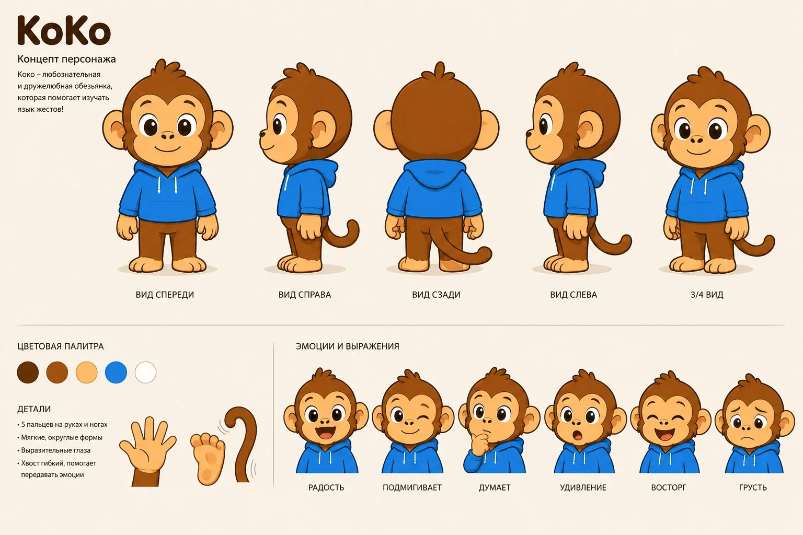
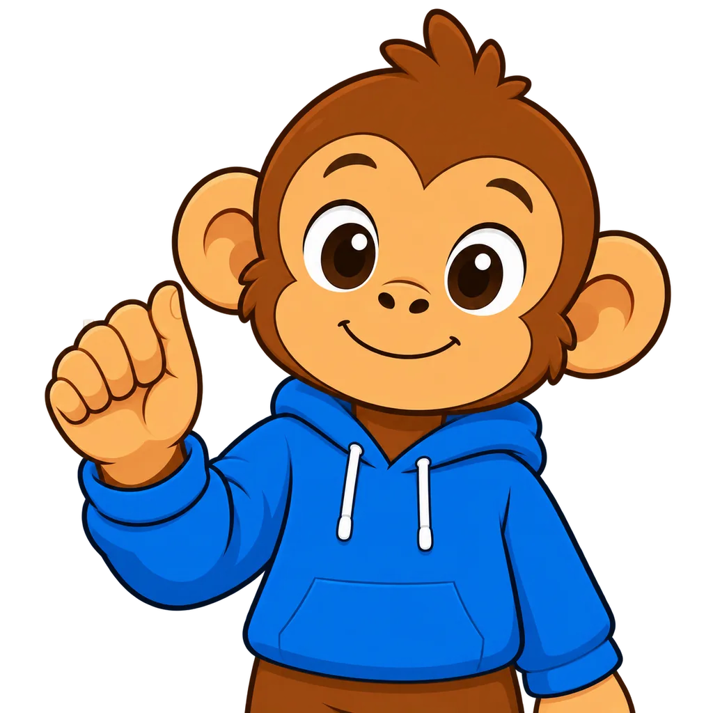
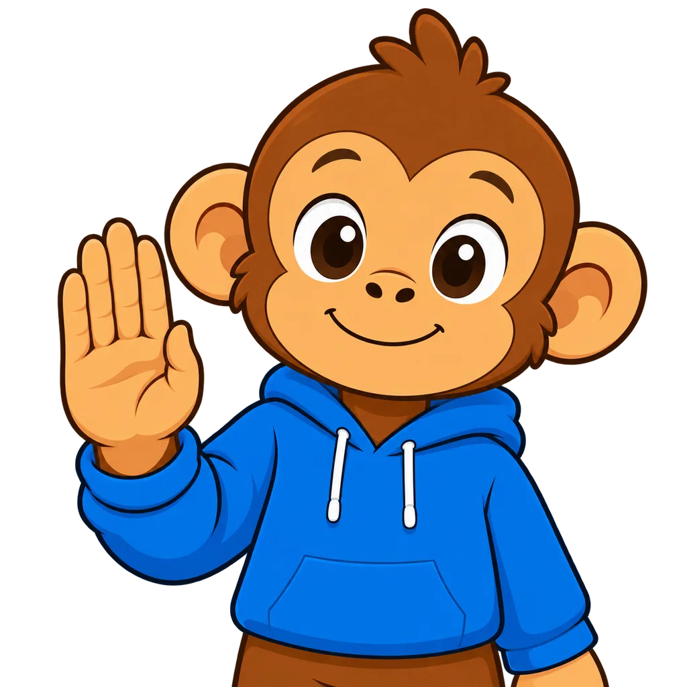
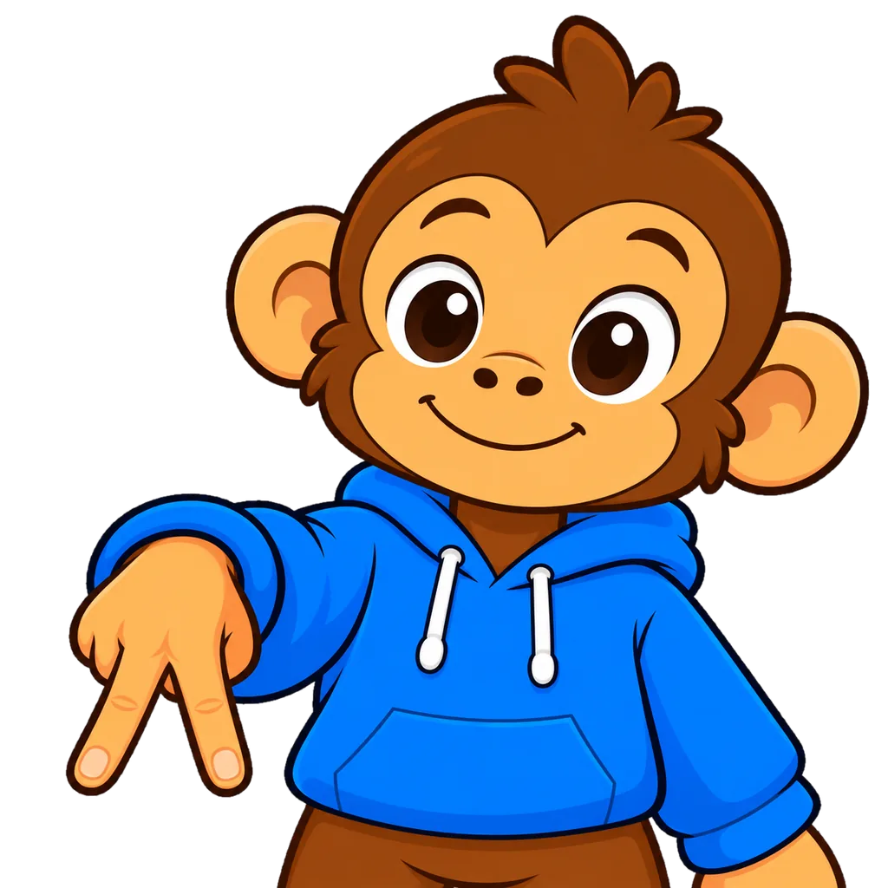
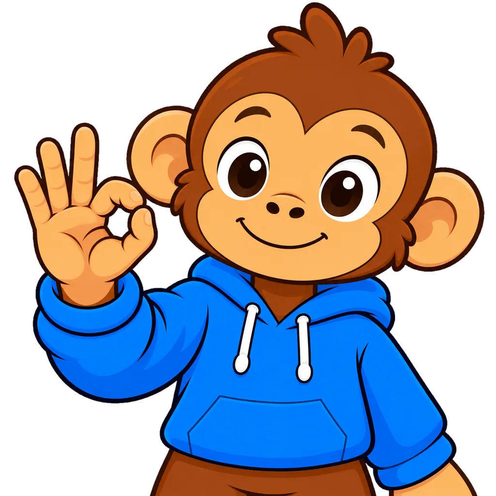
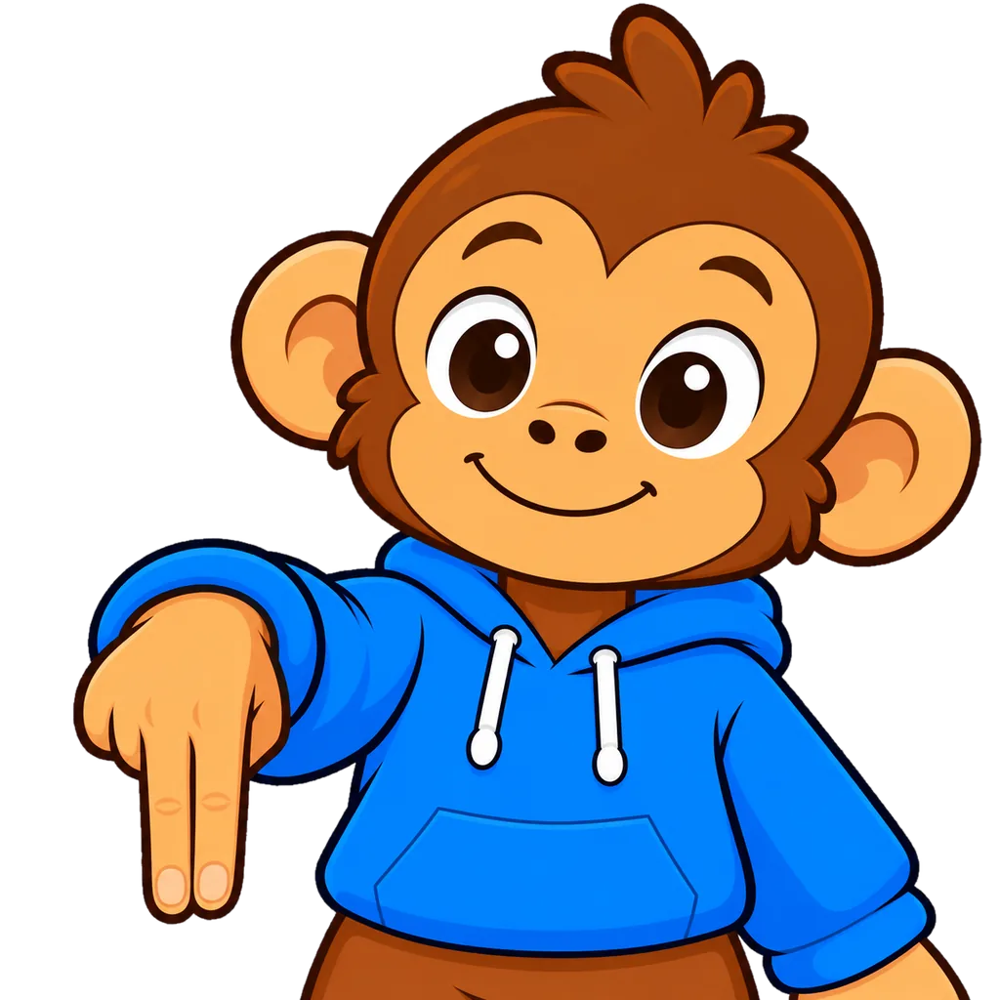
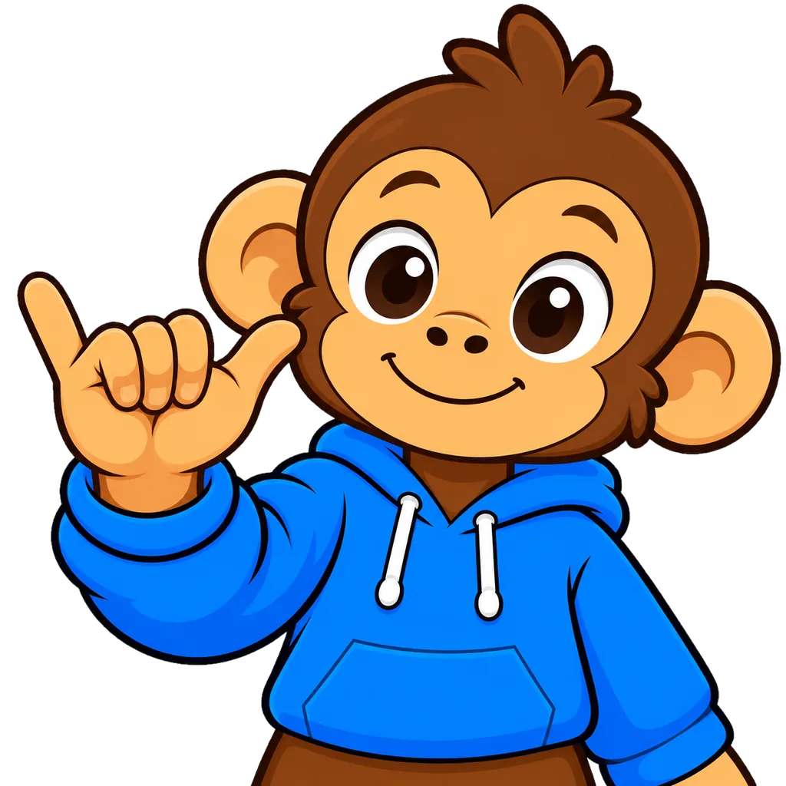
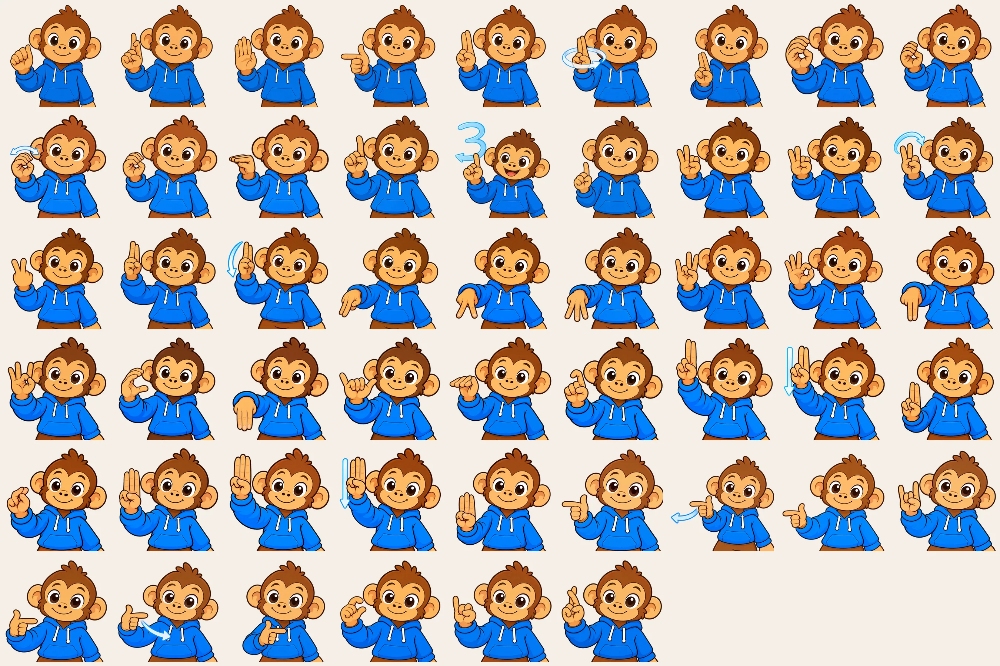
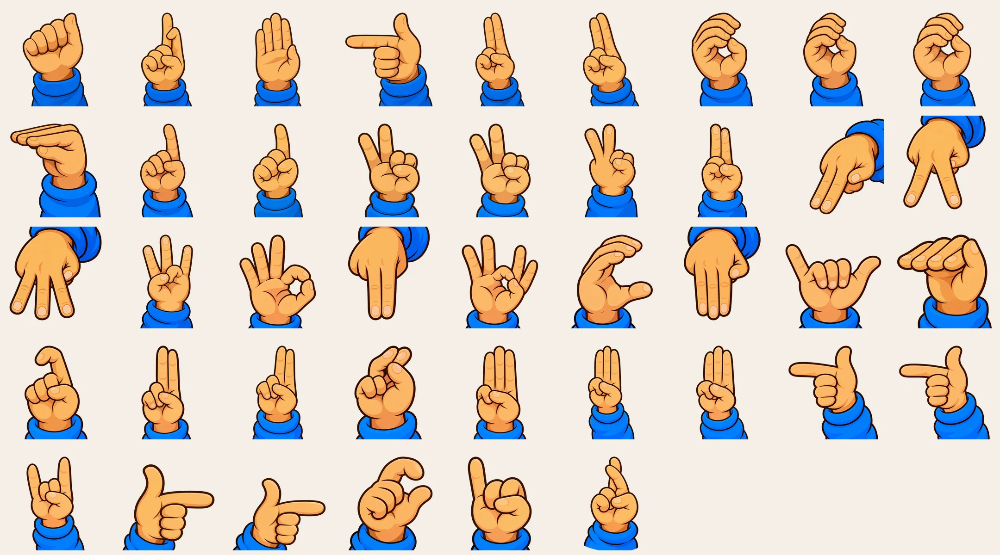

KoKo — sign language app
My iOS app for learning Russian Sign Language: a mascot, an illustrated alphabet and on-device gesture recognition.
Idea
KoKo is my Duolingo-style iOS app for Russian Sign Language. Instead of watching videos, you sign in front of the camera and the app checks the hand shape on device, with Vision and a Create ML model. Lessons are led by Koko, a monkey in a blue hoodie.
That meant every letter of the fingerspelling alphabet had to be drawn with the mascot — and the hand shapes had to be correct, not just cute.







Process
33 letters; the nine that involve movement get start, end and path frames, 51 images in total, plus a second set of 42 hand-only images. Images were generated with a strict reference sheet to keep the character consistent, then cleaned by a Python pipeline: background removal, artifact clean-up, resizing. Letters where the model kept getting the gesture wrong were flagged for manual review instead of being shipped.


Code
The app is written in Swift and SwiftUI. Source: github.com/rockstaneverdie/koko-sign-app.